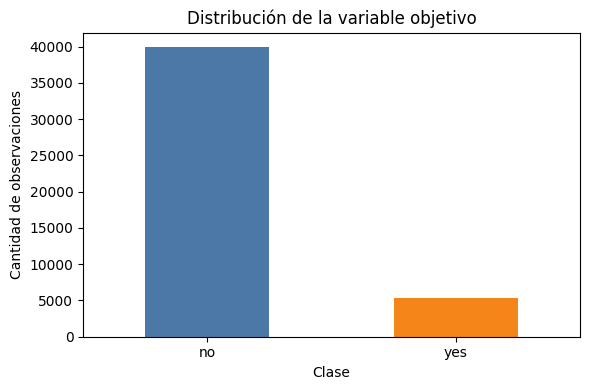
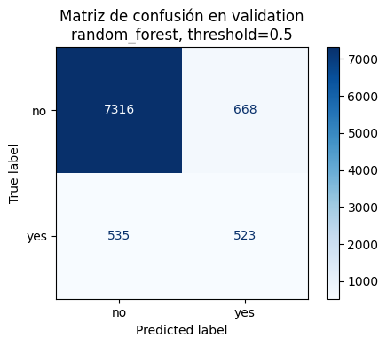
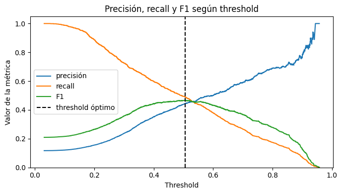
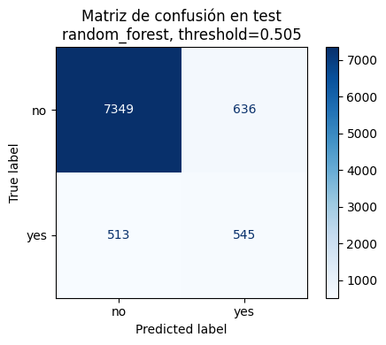

import importlib.util
if importlib.util.find_spec("ucimlrepo") is None:
print("Instalando ucimlrepo en el kernel actual...")
import numpy as np
import pandas as pd
import matplotlib.pyplot as plt
from IPython.display import display
from ucimlrepo import fetch_ucirepo
from sklearn.compose import ColumnTransformer
from sklearn.dummy import DummyClassifier
from sklearn.ensemble import RandomForestClassifier
from sklearn.impute import SimpleImputer
from sklearn.linear_model import LogisticRegression
from sklearn.metrics import (
ConfusionMatrixDisplay,
accuracy_score,
average_precision_score,
classification_report,
confusion_matrix,
f1_score,
precision_recall_curve,
precision_score,
recall_score,
roc_auc_score,
)
from sklearn.model_selection import GridSearchCV, StratifiedKFold, train_test_split
from sklearn.pipeline import Pipeline
from sklearn.preprocessing import OneHotEncoder, StandardScaler
RANDOM_STATE = 42
plt.style.use("default")
pd.set_option("display.max_columns", 80)Clasificación supervisada con Bank Marketing
1. Introducción
En aprendizaje supervisado tenemos datos de entrada y una respuesta conocida. El modelo observa muchos pares del tipo:
\[\text{entradas} \rightarrow \text{respuesta conocida}\]
Luego intenta aprender una regla que permita estimar la respuesta para casos nuevos.
La diferencia entre clasificación y regresión está en el tipo de respuesta que queremos predecir:
- En regresión, la salida es numérica continua. Por ejemplo: predecir el precio de una vivienda.
- En clasificación, la salida es una categoría. Por ejemplo: predecir si un correo es spam o no spam.
En el caso del banco, no queremos predecir un monto continuo. Queremos responder una pregunta de tipo sí/no: ¿esta persona aceptará el producto?
2. Definición del problema
Formalmente, nuestro problema queda definido así:
- Entrada: variables sobre la persona, su historial y el contacto realizado por el banco.
- Salida: la variable objetivo
y. - Clase positiva:
yes, es decir, la persona contrató el depósito a plazo. - Clase negativa:
no, es decir, la persona no contrató el producto.
Como la variable objetivo solo tiene dos valores posibles, trabajaremos con clasificación binaria. En código convertiremos yes a 1 y no a 0, porque muchas métricas y modelos esperan etiquetas numéricas.
3. Dataset
Usaremos el dataset Bank Marketing del repositorio UCI Machine Learning Repository. Este dataset contiene registros de campañas de marketing directo de una institución bancaria portuguesa.
El dataset mezcla distintos tipos de variables:
- Variables numéricas: por ejemplo edad, balance o cantidad de contactos previos.
- Variables categóricas: por ejemplo trabajo, estado civil, educación o tipo de contacto.
- Variable objetivo:
y, que indica si la persona contrató el depósito a plazo.
Una advertencia importante: la variable duration mide cuánto duró la llamada. Esa información solo se conoce después de realizar el contacto, por lo que usarla para predecir antes de llamar produciría data leakage. La eliminaremos antes de entrenar los modelos.
4. Carga del dataset
Primero importamos las bibliotecas necesarias. Si ucimlrepo no está instalado en el entorno, la celda intenta instalarlo usando %pip install ucimlrepo. En el repositorio también declaramos esta dependencia en pyproject.toml, por lo que en el Dev Container debería estar disponible después de sincronizar el entorno.
bank_marketing = fetch_ucirepo(id=222)
X_original = bank_marketing.data.features.copy()
y_original = bank_marketing.data.targets.copy()
df = pd.concat([X_original, y_original], axis=1)
variable_objetivo = y_original.columns[0]
print(f"Filas: {df.shape[0]:,}")
print(f"Columnas: {df.shape[1]:,}")
print(f"Variable objetivo: {variable_objetivo}")Filas: 45,211
Columnas: 17
Variable objetivo: ymetadata_variables = bank_marketing.variables
display(metadata_variables)| name | role | type | demographic | description | units | missing_values | |
|---|---|---|---|---|---|---|---|
| 0 | age | Feature | Integer | Age | NaN | NaN | no |
| 1 | job | Feature | Categorical | Occupation | type of job (categorical: 'admin.','blue-colla... | NaN | no |
| 2 | marital | Feature | Categorical | Marital Status | marital status (categorical: 'divorced','marri... | NaN | no |
| 3 | education | Feature | Categorical | Education Level | (categorical: 'basic.4y','basic.6y','basic.9y'... | NaN | no |
| 4 | default | Feature | Binary | NaN | has credit in default? | NaN | no |
| 5 | balance | Feature | Integer | NaN | average yearly balance | euros | no |
| 6 | housing | Feature | Binary | NaN | has housing loan? | NaN | no |
| 7 | loan | Feature | Binary | NaN | has personal loan? | NaN | no |
| 8 | contact | Feature | Categorical | NaN | contact communication type (categorical: 'cell... | NaN | yes |
| 9 | day_of_week | Feature | Date | NaN | last contact day of the week | NaN | no |
| 10 | month | Feature | Date | NaN | last contact month of year (categorical: 'jan'... | NaN | no |
| 11 | duration | Feature | Integer | NaN | last contact duration, in seconds (numeric). ... | NaN | no |
| 12 | campaign | Feature | Integer | NaN | number of contacts performed during this campa... | NaN | no |
| 13 | pdays | Feature | Integer | NaN | number of days that passed by after the client... | NaN | yes |
| 14 | previous | Feature | Integer | NaN | number of contacts performed before this campa... | NaN | no |
| 15 | poutcome | Feature | Categorical | NaN | outcome of the previous marketing campaign (ca... | NaN | yes |
| 16 | y | Target | Binary | NaN | has the client subscribed a term deposit? | NaN | no |
5. Inspección inicial
Antes de entrenar modelos, conviene mirar los datos con calma. En esta etapa buscamos responder preguntas simples:
- ¿Cómo se ven las primeras filas?
- ¿Qué tipos de datos tiene cada columna?
- ¿Hay clases desbalanceadas?
- ¿Hay valores faltantes o duplicados?
Estas preguntas parecen básicas, pero evitan muchos errores posteriores.
df.head()| age | job | marital | education | default | balance | housing | loan | contact | day_of_week | month | duration | campaign | pdays | previous | poutcome | y | |
|---|---|---|---|---|---|---|---|---|---|---|---|---|---|---|---|---|---|
| 0 | 58 | management | married | tertiary | no | 2143 | yes | no | NaN | 5 | may | 261 | 1 | -1 | 0 | NaN | no |
| 1 | 44 | technician | single | secondary | no | 29 | yes | no | NaN | 5 | may | 151 | 1 | -1 | 0 | NaN | no |
| 2 | 33 | entrepreneur | married | secondary | no | 2 | yes | yes | NaN | 5 | may | 76 | 1 | -1 | 0 | NaN | no |
| 3 | 47 | blue-collar | married | NaN | no | 1506 | yes | no | NaN | 5 | may | 92 | 1 | -1 | 0 | NaN | no |
| 4 | 33 | NaN | single | NaN | no | 1 | no | no | NaN | 5 | may | 198 | 1 | -1 | 0 | NaN | no |
df.info()<class 'pandas.DataFrame'>
RangeIndex: 45211 entries, 0 to 45210
Data columns (total 17 columns):
# Column Non-Null Count Dtype
--- ------ -------------- -----
0 age 45211 non-null int64
1 job 44923 non-null str
2 marital 45211 non-null str
3 education 43354 non-null str
4 default 45211 non-null str
5 balance 45211 non-null int64
6 housing 45211 non-null str
7 loan 45211 non-null str
8 contact 32191 non-null str
9 day_of_week 45211 non-null int64
10 month 45211 non-null str
11 duration 45211 non-null int64
12 campaign 45211 non-null int64
13 pdays 45211 non-null int64
14 previous 45211 non-null int64
15 poutcome 8252 non-null str
16 y 45211 non-null str
dtypes: int64(7), str(10)
memory usage: 5.9 MBdf.describe(include="all").T| count | unique | top | freq | mean | std | min | 25% | 50% | 75% | max | |
|---|---|---|---|---|---|---|---|---|---|---|---|
| age | 45211.0 | NaN | NaN | NaN | 40.93621 | 10.618762 | 18.0 | 33.0 | 39.0 | 48.0 | 95.0 |
| job | 44923 | 11 | blue-collar | 9732 | NaN | NaN | NaN | NaN | NaN | NaN | NaN |
| marital | 45211 | 3 | married | 27214 | NaN | NaN | NaN | NaN | NaN | NaN | NaN |
| education | 43354 | 3 | secondary | 23202 | NaN | NaN | NaN | NaN | NaN | NaN | NaN |
| default | 45211 | 2 | no | 44396 | NaN | NaN | NaN | NaN | NaN | NaN | NaN |
| balance | 45211.0 | NaN | NaN | NaN | 1362.272058 | 3044.765829 | -8019.0 | 72.0 | 448.0 | 1428.0 | 102127.0 |
| housing | 45211 | 2 | yes | 25130 | NaN | NaN | NaN | NaN | NaN | NaN | NaN |
| loan | 45211 | 2 | no | 37967 | NaN | NaN | NaN | NaN | NaN | NaN | NaN |
| contact | 32191 | 2 | cellular | 29285 | NaN | NaN | NaN | NaN | NaN | NaN | NaN |
| day_of_week | 45211.0 | NaN | NaN | NaN | 15.806419 | 8.322476 | 1.0 | 8.0 | 16.0 | 21.0 | 31.0 |
| month | 45211 | 12 | may | 13766 | NaN | NaN | NaN | NaN | NaN | NaN | NaN |
| duration | 45211.0 | NaN | NaN | NaN | 258.16308 | 257.527812 | 0.0 | 103.0 | 180.0 | 319.0 | 4918.0 |
| campaign | 45211.0 | NaN | NaN | NaN | 2.763841 | 3.098021 | 1.0 | 1.0 | 2.0 | 3.0 | 63.0 |
| pdays | 45211.0 | NaN | NaN | NaN | 40.197828 | 100.128746 | -1.0 | -1.0 | -1.0 | -1.0 | 871.0 |
| previous | 45211.0 | NaN | NaN | NaN | 0.580323 | 2.303441 | 0.0 | 0.0 | 0.0 | 0.0 | 275.0 |
| poutcome | 8252 | 3 | failure | 4901 | NaN | NaN | NaN | NaN | NaN | NaN | NaN |
| y | 45211 | 2 | no | 39922 | NaN | NaN | NaN | NaN | NaN | NaN | NaN |
conteo_clases = df[variable_objetivo].value_counts(dropna=False)
proporcion_clases = df[variable_objetivo].value_counts(normalize=True, dropna=False)
resumen_clases = pd.DataFrame({
"n": conteo_clases,
"proporción": proporcion_clases,
})
display(resumen_clases)| n | proporción | |
|---|---|---|
| y | ||
| no | 39922 | 0.883015 |
| yes | 5289 | 0.116985 |
fig, ax = plt.subplots(figsize=(6, 4))
resumen_clases["n"].plot(kind="bar", ax=ax, color=["#4C78A8", "#F58518"])
ax.set_title("Distribución de la variable objetivo")
ax.set_xlabel("Clase")
ax.set_ylabel("Cantidad de observaciones")
ax.tick_params(axis="x", rotation=0)
plt.tight_layout()
plt.show()
valores_faltantes = df.isna().sum().sort_values(ascending=False)
valores_faltantes = valores_faltantes[valores_faltantes > 0]
print(f"Columnas con valores faltantes reales: {len(valores_faltantes)}")
display(valores_faltantes.to_frame("faltantes"))
duplicados = df.duplicated().sum()
print(f"Filas duplicadas exactas: {duplicados:,}")Columnas con valores faltantes reales: 4| faltantes | |
|---|---|
| poutcome | 36959 |
| contact | 13020 |
| education | 1857 |
| job | 288 |
Filas duplicadas exactas: 06. Preparación de datos
La preparación tiene varios pasos. Primero hacemos una limpieza básica. Luego separamos entradas (X) y salida (y). Después eliminamos duration para evitar data leakage.
También necesitamos tratar de forma distinta las variables numéricas y categóricas:
- A las variables numéricas les aplicaremos imputación y escalamiento.
- A las variables categóricas les aplicaremos imputación y one-hot encoding.
Todo esto se integrará más adelante dentro de un Pipeline, para que el mismo proceso se use durante entrenamiento y evaluación.
df_limpio = df.copy()
columnas_texto = df_limpio.select_dtypes(include="object").columns
for columna in columnas_texto:
df_limpio[columna] = df_limpio[columna].astype("object").map(
lambda valor: valor.strip().lower() if isinstance(valor, str) else valor
)
df_limpio = df_limpio.replace({"unknown": np.nan, "": np.nan})
filas_antes = len(df_limpio)
df_limpio = df_limpio.drop_duplicates().reset_index(drop=True)
filas_despues = len(df_limpio)
print(f"Filas antes de eliminar duplicados exactos: {filas_antes:,}")
print(f"Filas después de eliminar duplicados exactos: {filas_despues:,}")
print(f"Filas eliminadas: {filas_antes - filas_despues:,}")Filas antes de eliminar duplicados exactos: 45,211
Filas después de eliminar duplicados exactos: 45,211
Filas eliminadas: 0/var/folders/n4/j3zj6_r13rv55gc2c5btztph0000gn/T/ipykernel_30646/2586486750.py:3: Pandas4Warning: For backward compatibility, 'str' dtypes are included by select_dtypes when 'object' dtype is specified. This behavior is deprecated and will be removed in a future version. Explicitly pass 'str' to `include` to select them, or to `exclude` to remove them and silence this warning.
See https://pandas.pydata.org/docs/user_guide/migration-3-strings.html#string-migration-select-dtypes for details on how to write code that works with pandas 2 and 3.
columnas_texto = df_limpio.select_dtypes(include="object").columnsmapeo_objetivo = {"no": 0, "yes": 1}
y = df_limpio[variable_objetivo].map(mapeo_objetivo).astype(int)
X = df_limpio.drop(columns=[variable_objetivo])
if "duration" in X.columns:
X = X.drop(columns=["duration"])
print("Se eliminó la columna 'duration' para evitar data leakage.")
else:
print("No se encontró la columna 'duration'.")
variables_numericas = X.select_dtypes(include=["number"]).columns.tolist()
variables_categoricas = X.select_dtypes(exclude=["number"]).columns.tolist()
print(f"Variables numéricas ({len(variables_numericas)}): {variables_numericas}")
print(f"Variables categóricas ({len(variables_categoricas)}): {variables_categoricas}")Se eliminó la columna 'duration' para evitar data leakage.
Variables numéricas (6): ['age', 'balance', 'day_of_week', 'campaign', 'pdays', 'previous']
Variables categóricas (9): ['job', 'marital', 'education', 'default', 'housing', 'loan', 'contact', 'month', 'poutcome']7. División del dataset
Separaremos los datos en tres subconjuntos:
- Train (60%): se usa para ajustar los modelos y hacer validación cruzada.
- Validation (20%): se usa para comparar modelos entrenados.
- Test (20%): se reserva hasta el final para estimar desempeño en datos no usados durante la selección.
Usaremos stratify para conservar una proporción similar de clases en cada subconjunto. Esto es importante cuando una clase es mucho menos frecuente que la otra.
X_train, X_temp, y_train, y_temp = train_test_split(
X,
y,
test_size=0.40,
stratify=y,
random_state=RANDOM_STATE,
)
X_val, X_test, y_val, y_test = train_test_split(
X_temp,
y_temp,
test_size=0.50,
stratify=y_temp,
random_state=RANDOM_STATE,
)
resumen_split = pd.DataFrame({
"filas": [len(X_train), len(X_val), len(X_test)],
"proporción": [len(X_train) / len(X), len(X_val) / len(X), len(X_test) / len(X)],
"tasa_clase_positiva": [y_train.mean(), y_val.mean(), y_test.mean()],
}, index=["train", "validation", "test"])
display(resumen_split)| filas | proporción | tasa_clase_positiva | |
|---|---|---|---|
| train | 27126 | 0.599987 | 0.116973 |
| validation | 9042 | 0.199996 | 0.117010 |
| test | 9043 | 0.200018 | 0.116997 |
8. Modelos
Entrenaremos tres modelos:
- DummyClassifier: baseline simple. Sirve para saber si un modelo real está aportando valor.
- LogisticRegression: modelo lineal clásico para clasificación binaria.
- RandomForestClassifier: ensamble de árboles de decisión, capaz de capturar relaciones no lineales.
El baseline es importante porque un dataset desbalanceado puede producir una accuracy alta incluso con un modelo poco útil. Si la mayoría de las personas responde no, un modelo que siempre predice no puede parecer bueno por accuracy, aunque no detecte clientes interesados.
preprocesamiento_numerico = Pipeline(steps=[
("imputacion", SimpleImputer(strategy="median")),
("escalamiento", StandardScaler()),
])
preprocesamiento_categorico = Pipeline(steps=[
("imputacion", SimpleImputer(strategy="most_frequent")),
("one_hot", OneHotEncoder(handle_unknown="ignore", sparse_output=False)),
])
preprocesamiento = ColumnTransformer(
transformers=[
("num", preprocesamiento_numerico, variables_numericas),
("cat", preprocesamiento_categorico, variables_categoricas),
]
)9. Entrenamiento con Pipeline, GridSearchCV y StratifiedKFold
Pipeline nos permite unir preparación de datos y modelo en un solo objeto. Esto reduce errores, porque evita preparar train y test de formas distintas.
GridSearchCV prueba combinaciones de hiperparámetros. Usaremos StratifiedKFold para que cada partición de validación cruzada conserve la proporción de clases. Como criterio de búsqueda usaremos average_precision, una métrica útil cuando la clase positiva es menos frecuente.
modelos = {
"dummy": {
"estimador": DummyClassifier(random_state=RANDOM_STATE),
"parametros": {
"modelo__strategy": ["most_frequent", "stratified"],
},
},
"regresión_logística": {
"estimador": LogisticRegression(
max_iter=1000,
solver="liblinear",
class_weight="balanced",
random_state=RANDOM_STATE,
),
"parametros": {
"modelo__C": [0.1, 1.0, 10.0],
},
},
"random_forest": {
"estimador": RandomForestClassifier(
n_estimators=120,
class_weight="balanced_subsample",
n_jobs=-1,
random_state=RANDOM_STATE,
),
"parametros": {
"modelo__max_depth": [8, None],
"modelo__min_samples_leaf": [1, 5],
},
},
}
cv = StratifiedKFold(n_splits=3, shuffle=True, random_state=RANDOM_STATE)def construir_pipeline(estimador):
return Pipeline(steps=[
("preprocesamiento", preprocesamiento),
("modelo", estimador),
])
def obtener_scores_positivos(modelo_entrenado, X_datos):
indice_clase_positiva = list(modelo_entrenado.classes_).index(1)
return modelo_entrenado.predict_proba(X_datos)[:, indice_clase_positiva]
def calcular_metricas(nombre, modelo_entrenado, X_datos, y_real, threshold=0.5):
scores = obtener_scores_positivos(modelo_entrenado, X_datos)
y_pred = (scores >= threshold).astype(int)
return {
"modelo": nombre,
"threshold": threshold,
"accuracy": accuracy_score(y_real, y_pred),
"precision": precision_score(y_real, y_pred, zero_division=0),
"recall": recall_score(y_real, y_pred, zero_division=0),
"f1": f1_score(y_real, y_pred, zero_division=0),
"roc_auc": roc_auc_score(y_real, scores),
"average_precision": average_precision_score(y_real, scores),
}busquedas = {}
mejores_modelos = {}
for nombre, configuracion in modelos.items():
print(f"Entrenando {nombre}...")
pipeline = construir_pipeline(configuracion["estimador"])
busqueda = GridSearchCV(
estimator=pipeline,
param_grid=configuracion["parametros"],
scoring="average_precision",
cv=cv,
n_jobs=-1,
refit=True,
)
busqueda.fit(X_train, y_train)
busquedas[nombre] = busqueda
mejores_modelos[nombre] = busqueda.best_estimator_
print(f" Mejor average precision CV: {busqueda.best_score_:.3f}")
print(f" Mejores parámetros: {busqueda.best_params_}")Entrenando dummy...
Mejor average precision CV: 0.117
Mejores parámetros: {'modelo__strategy': 'most_frequent'}
Entrenando regresión_logística...
Mejor average precision CV: 0.373
Mejores parámetros: {'modelo__C': 0.1}
Entrenando random_forest...
Mejor average precision CV: 0.400
Mejores parámetros: {'modelo__max_depth': None, 'modelo__min_samples_leaf': 5}10. Métricas de evaluación
La matriz de confusión separa las predicciones en cuatro casos:
- TP: verdaderos positivos. El modelo predijo
yesy la respuesta real erayes. - TN: verdaderos negativos. El modelo predijo
noy la respuesta real erano. - FP: falsos positivos. El modelo predijo
yes, pero la respuesta real erano. - FN: falsos negativos. El modelo predijo
no, pero la respuesta real erayes.
Las métricas principales son:
\[\text{Accuracy} = \frac{TP + TN}{TP + FP + FN + TN}\]
\[\text{Precisión} = \frac{TP}{TP + FP}\]
\[\text{Recall} = \frac{TP}{TP + FN}\]
\[\text{F1} = 2 \cdot \frac{\text{Precisión} \cdot \text{Recall}}{\text{Precisión} + \text{Recall}}\]
También usaremos ROC AUC y Average Precision. Estas métricas trabajan con scores o probabilidades, no solo con una clase final. Por eso son útiles para comparar modelos antes de elegir un umbral de decisión.
11. Evaluación en validation
Ahora evaluamos los mejores modelos encontrados por GridSearchCV usando el conjunto de validación. En esta primera comparación usamos el umbral clásico 0.5: si la probabilidad estimada de yes es al menos 0.5, predecimos clase positiva.
metricas_validacion = [
calcular_metricas(nombre, modelo, X_val, y_val, threshold=0.5)
for nombre, modelo in mejores_modelos.items()
]
tabla_validacion = (
pd.DataFrame(metricas_validacion)
.set_index("modelo")
.sort_values("average_precision", ascending=False)
)
display(tabla_validacion.style.format("{:.3f}"))| threshold | accuracy | precision | recall | f1 | roc_auc | average_precision | |
|---|---|---|---|---|---|---|---|
| modelo | |||||||
| random_forest | 0.500 | 0.867 | 0.439 | 0.494 | 0.465 | 0.781 | 0.435 |
| regresión_logística | 0.500 | 0.759 | 0.263 | 0.590 | 0.364 | 0.748 | 0.387 |
| dummy | 0.500 | 0.883 | 0.000 | 0.000 | 0.000 | 0.500 | 0.117 |
criterio_seleccion = "average_precision"
nombre_mejor_modelo = tabla_validacion[criterio_seleccion].idxmax()
mejor_modelo = mejores_modelos[nombre_mejor_modelo]
print(f"Mejor modelo según {criterio_seleccion}: {nombre_mejor_modelo}")
print("Parámetros seleccionados:")
print(busquedas[nombre_mejor_modelo].best_params_)Mejor modelo según average_precision: random_forest
Parámetros seleccionados:
{'modelo__max_depth': None, 'modelo__min_samples_leaf': 5}scores_val = obtener_scores_positivos(mejor_modelo, X_val)
pred_val_05 = (scores_val >= 0.5).astype(int)
print(classification_report(y_val, pred_val_05, target_names=["no", "yes"], zero_division=0))
fig, ax = plt.subplots(figsize=(5, 4))
ConfusionMatrixDisplay.from_predictions(
y_val,
pred_val_05,
display_labels=["no", "yes"],
cmap="Blues",
values_format="d",
ax=ax,
)
ax.set_title(f"Matriz de confusión en validation\n{nombre_mejor_modelo}, threshold=0.5")
plt.tight_layout()
plt.show() precision recall f1-score support
no 0.93 0.92 0.92 7984
yes 0.44 0.49 0.47 1058
accuracy 0.87 9042
macro avg 0.69 0.71 0.69 9042
weighted avg 0.87 0.87 0.87 9042

12. Threshold tuning
Muchos clasificadores no producen directamente una decisión, sino un score o una probabilidad. El threshold es el punto de corte que transforma esa probabilidad en una clase.
Con threshold 0.5, una observación se clasifica como yes si su probabilidad estimada es al menos 50%. Pero ese valor no siempre es el mejor. Si bajamos el threshold, el modelo predice más positivos: suele subir el recall, pero puede bajar la precisión. Si subimos el threshold, el modelo exige más evidencia para predecir yes: suele subir la precisión, pero puede bajar el recall.
Aquí buscaremos el threshold que maximiza F1 en el conjunto de validación.
precision_curve, recall_curve, thresholds = precision_recall_curve(y_val, scores_val)
precision_threshold = precision_curve[:-1]
recall_threshold = recall_curve[:-1]
f1_threshold = 2 * (precision_threshold * recall_threshold) / (
precision_threshold + recall_threshold + 1e-12
)
indice_mejor_threshold = int(np.nanargmax(f1_threshold))
threshold_optimo = float(thresholds[indice_mejor_threshold])
print(f"Threshold que maximiza F1 en validación: {threshold_optimo:.3f}")
print(f"Precisión: {precision_threshold[indice_mejor_threshold]:.3f}")
print(f"Recall: {recall_threshold[indice_mejor_threshold]:.3f}")
print(f"F1: {f1_threshold[indice_mejor_threshold]:.3f}")Threshold que maximiza F1 en validación: 0.505
Precisión: 0.445
Recall: 0.492
F1: 0.467fig, ax = plt.subplots(figsize=(7, 4))
ax.plot(thresholds, precision_threshold, label="precisión")
ax.plot(thresholds, recall_threshold, label="recall")
ax.plot(thresholds, f1_threshold, label="F1")
ax.axvline(threshold_optimo, color="black", linestyle="--", label="threshold óptimo")
ax.set_title("Precisión, recall y F1 según threshold")
ax.set_xlabel("Threshold")
ax.set_ylabel("Valor de la métrica")
ax.set_ylim(0, 1.05)
ax.legend()
plt.tight_layout()
plt.show()
13. Evaluación final en test
El conjunto de test se usa una sola vez al final. Esto nos da una estimación más honesta del desempeño esperado, porque test no participó en el entrenamiento, en la búsqueda de hiperparámetros ni en la selección del threshold.
Compararemos el mejor modelo con threshold 0.5 y con el threshold ajustado en validación.
metricas_test_05 = calcular_metricas(
f"{nombre_mejor_modelo}_threshold_0.5",
mejor_modelo,
X_test,
y_test,
threshold=0.5,
)
metricas_test_optimo = calcular_metricas(
f"{nombre_mejor_modelo}_threshold_ajustado",
mejor_modelo,
X_test,
y_test,
threshold=threshold_optimo,
)
tabla_test = pd.DataFrame([metricas_test_05, metricas_test_optimo]).set_index("modelo")
display(tabla_test.style.format("{:.3f}"))| threshold | accuracy | precision | recall | f1 | roc_auc | average_precision | |
|---|---|---|---|---|---|---|---|
| modelo | |||||||
| random_forest_threshold_0.5 | 0.500 | 0.872 | 0.459 | 0.524 | 0.489 | 0.790 | 0.466 |
| random_forest_threshold_ajustado | 0.505 | 0.873 | 0.461 | 0.515 | 0.487 | 0.790 | 0.466 |
scores_test = obtener_scores_positivos(mejor_modelo, X_test)
pred_test_optimo = (scores_test >= threshold_optimo).astype(int)
print(classification_report(y_test, pred_test_optimo, target_names=["no", "yes"], zero_division=0))
fig, ax = plt.subplots(figsize=(5, 4))
ConfusionMatrixDisplay.from_predictions(
y_test,
pred_test_optimo,
display_labels=["no", "yes"],
cmap="Blues",
values_format="d",
ax=ax,
)
ax.set_title(f"Matriz de confusión en test\n{nombre_mejor_modelo}, threshold={threshold_optimo:.3f}")
plt.tight_layout()
plt.show() precision recall f1-score support
no 0.93 0.92 0.93 7985
yes 0.46 0.52 0.49 1058
accuracy 0.87 9043
macro avg 0.70 0.72 0.71 9043
weighted avg 0.88 0.87 0.88 9043

14. Interpretación del mejor modelo
La interpretación depende del tipo de modelo seleccionado. En una regresión logística podemos mirar coeficientes; en un random forest podemos mirar importancias de variables. Estas técnicas no explican todo el comportamiento del modelo, pero ayudan a revisar que señales parecen estar influyendo más en la predicción.
def extraer_importancias(modelo_entrenado, n=15):
nombres_variables = modelo_entrenado.named_steps["preprocesamiento"].get_feature_names_out()
estimador = modelo_entrenado.named_steps["modelo"]
if hasattr(estimador, "feature_importances_"):
valores = estimador.feature_importances_
columna_valor = "importancia"
elif hasattr(estimador, "coef_"):
valores = estimador.coef_.ravel()
columna_valor = "coeficiente"
else:
return pd.DataFrame()
tabla = pd.DataFrame({
"variable_transformada": nombres_variables,
columna_valor: valores,
"magnitud_absoluta": np.abs(valores),
})
return tabla.sort_values("magnitud_absoluta", ascending=False).head(n)
tabla_importancias = extraer_importancias(mejor_modelo)
if tabla_importancias.empty:
print("El modelo seleccionado no expone coeficientes ni importancias de variables.")
else:
display(tabla_importancias)| variable_transformada | importancia | magnitud_absoluta | |
|---|---|---|---|
| 1 | num__balance | 0.136545 | 0.136545 |
| 0 | num__age | 0.123285 | 0.123285 |
| 2 | num__day_of_week | 0.106219 | 0.106219 |
| 4 | num__pdays | 0.061216 | 0.061216 |
| 3 | num__campaign | 0.057229 | 0.057229 |
| 45 | cat__poutcome_success | 0.054210 | 0.054210 |
| 43 | cat__poutcome_failure | 0.038052 | 0.038052 |
| 25 | cat__housing_no | 0.031784 | 0.031784 |
| 26 | cat__housing_yes | 0.028489 | 0.028489 |
| 5 | num__previous | 0.027163 | 0.027163 |
| 39 | cat__month_may | 0.023907 | 0.023907 |
| 31 | cat__month_apr | 0.020038 | 0.020038 |
| 41 | cat__month_oct | 0.019333 | 0.019333 |
| 18 | cat__marital_married | 0.017157 | 0.017157 |
| 38 | cat__month_mar | 0.014339 | 0.014339 |
15. Análisis final
En esta unidad construimos un flujo completo de clasificación supervisada: carga de datos, inspección, preparación, división train/validation/test, entrenamiento con pipelines, búsqueda de hiperparámetros, evaluación y ajuste de threshold.
El DummyClassifier funciona como baseline. Si un modelo real no supera claramente al baseline, probablemente no está aprendiendo una señal útil. En problemas desbalanceados, este punto es especialmente importante porque la accuracy puede ser engañosa: un modelo que predice casi siempre no puede obtener una accuracy aparentemente alta, pero detectar muy pocos clientes que realmente aceptarían la oferta.
La tensión principal está entre precisión y recall. Si el banco quiere evitar contactar personas con baja probabilidad de aceptar, podría priorizar precisión: menos falsos positivos, pero también menos oportunidades detectadas. Si el banco quiere no perder clientes potencialmente interesados, podría priorizar recall: menos falsos negativos, aunque con más contactos que no terminarán en conversión.
Los falsos positivos representan personas que el modelo marca como interesadas, pero que no aceptan. Esto puede traducirse en costos operativos, llamadas innecesarias o mala experiencia del cliente. Los falsos negativos representan personas que sí habrían aceptado, pero el modelo no identifica. Esto implica oportunidades comerciales perdidas.
También vimos una limitación importante: no todas las variables disponibles son válidas para predecir antes de actuar. La columna duration fue eliminada porque solo se conoce después de la llamada. Esta decisión muestra que construir modelos no es solo aplicar algoritmos: también requiere entender el contexto, el momento en que cada dato está disponible y el costo de cada tipo de error.
En una aplicación real, el siguiente paso sería discutir con el área de negocio qué error duele más, revisar sesgos potenciales, monitorear desempeño en el tiempo y validar que el modelo mejore decisiones reales, no solo métricas offline.
Referencias
Géron, A. (2019). Hands-on machine learning with Scikit-Learn, Keras, and TensorFlow: Concepts, tools, and techniques to build intelligent systems (2nd ed.). O’Reilly Media. https://www.oreilly.com/library/view/hands-on-machine-learning/9781492032632/
Moro, S., Cortez, P., & Rita, P. (2014). A data-driven approach to predict the success of bank telemarketing. Decision Support Systems, 62, 22-31. https://doi.org/10.1016/j.dss.2014.03.001
UCI Machine Learning Repository. (n.d.). Bank Marketing. University of California, Irvine. https://archive.ics.uci.edu/dataset/222/bank+marketing
Jolibois, C. (2023). ucimlrepo: UCI Machine Learning Repository Python package. https://github.com/uci-ml-repo/ucimlrepo
Scikit-learn developers. (2024). sklearn.model_selection.train_test_split. Scikit-learn documentation. https://scikit-learn.org/stable/modules/generated/sklearn.model_selection.train_test_split.html
Scikit-learn developers. (2024). sklearn.model_selection.GridSearchCV. Scikit-learn documentation. https://scikit-learn.org/stable/modules/generated/sklearn.model_selection.GridSearchCV.html
Scikit-learn developers. (2024). sklearn.dummy.DummyClassifier. Scikit-learn documentation. https://scikit-learn.org/stable/modules/generated/sklearn.dummy.DummyClassifier.html
Scikit-learn developers. (2024). sklearn.linear_model.LogisticRegression. Scikit-learn documentation. https://scikit-learn.org/stable/modules/generated/sklearn.linear_model.LogisticRegression.html
Scikit-learn developers. (2024). sklearn.ensemble.RandomForestClassifier. Scikit-learn documentation. https://scikit-learn.org/stable/modules/generated/sklearn.ensemble.RandomForestClassifier.html
Scikit-learn developers. (2024). sklearn.metrics.classification_report. Scikit-learn documentation. https://scikit-learn.org/stable/modules/generated/sklearn.metrics.classification_report.html
Scikit-learn developers. (2024). sklearn.metrics.precision_recall_curve. Scikit-learn documentation. https://scikit-learn.org/stable/modules/generated/sklearn.metrics.precision_recall_curve.html